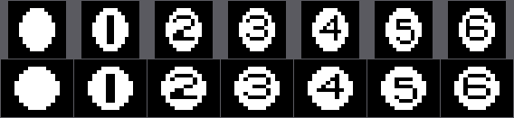
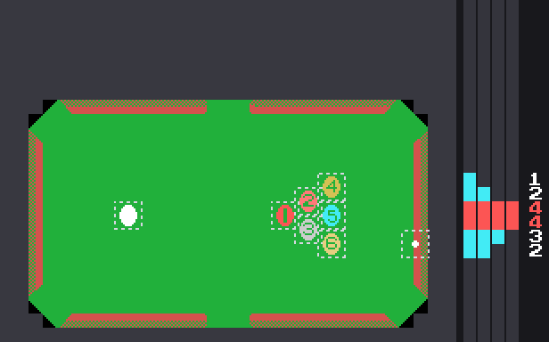

El cartucho
Dieciséis kilobytes en la página 1 del MSX, de 0x4000 a 0x7FFF. El juego ocupa 8.115 bytes: de 0x5FB3 en adelante son 8.269 bytes de 0xFF seguidos, relleno del chip que ninguna instrucción lee.
Los dieciséis bytes de la cabecera
41 42 5F 40 00 00 00 00 00 00 00 00 00 00 00 00
A B INIT=0x405FAB es la firma que busca la BIOS al arrancar, y detrás van cuatro punteros. Este cartucho solo declara el primero, INIT; los otros tres —STATEMENT, DEVICE y TEXT— están a cero.
Lo que el INIT deja montado
0x405F hace, por este orden:
- Instala
jp 0x4034en el gancho H.KEYI (0xFD9A), que es al que la BIOS llama en cada interrupción. - Pone la pila en 0xE400 y borra los 4 KB de 0xE000 a 0xEFFF.
- Programa los ocho registros del VDP y borra los 16 KB de VRAM.
- Carga los cuatro juegos de dibujos: el logotipo de Konami, los tiles de la mesa, la fuente y el rótulo grande del título.
- Se mete en
jr $(0x409E) y no sale nunca.
A partir de ahí el hilo principal no hace nada. El juego entero corre dentro de la interrupción, que es lo normal en los cartuchos de Konami de esta época.
La pantalla
SCREEN 2 con la tabla de registros de 0x46BE:
| tabla | dirección |
|---|---|
| nombres | 0x3800 |
| patrones | 0x2000, en tres tercios de 0x800 |
| colores | 0x0000, también en tres tercios |
| atributos de sprite | 0x3B00 |
| patrones de sprite | 0x1800, de 16×16 |
En SCREEN 2 el generador de caracteres son tres tablas independientes, una por cada tercio de la pantalla, y por eso casi todas las cargas del cartucho repiten la misma copia tres veces sumando 0x800. La excepción es el rótulo grande del título (0x5766), que solo se carga en el primer tercio: es donde caen sus dos filas.
Los dos intérpretes de dibujo
Casi nada se copia a pelo. Hay dos formatos, y los dos aparecen por todo el cartucho.
Formato A, que lee 0x472E: dos bytes de destino en VRAM y detrás los números de tile, con 0xFE para cambiar de destino y 0xFF para terminar. Lo usan todos los rótulos de texto.
Tiene un detalle bonito: la misma lista sirve para pintar y para borrar. Entrando por 0x472A en vez de por 0x472E, lo único que cambia es que C vale 0x00 en lugar de 0xFF, y abajo hay un and c que convierte cada tile en un cero. El parpadeo del menú son las dos entradas de la misma rutina sobre la misma lista.
Formato B, que lee 0x4969: una tira de órdenes donde el bit 7 separa los dos casos. Con el bit puesto, los siete de abajo dicen cuántos bytes literales vienen; sin él, cuántas veces se repite el byte que sigue. 0x00 cierra el bloque y 0xFF dice que viene otro destino. Con eso van comprimidos el logotipo de Konami, los colores de la mesa y el plano de la mesa entera.
Las letras son suyas
Los 48 glifos de 0x4136 se cargan en los tiles 0x30 a 0x5F, y esos números son exactamente el ASCII de los caracteres que dibujan: los dígitos, unos cuantos símbolos y las mayúsculas.

Por eso las listas de texto del cartucho escriben las palabras tal cual, en ASCII, sin tabla de conversión de por medio. En el hueco donde el ASCII tiene la barra, el corchete y los guiones (0x5C a 0x5F) hay cuatro dibujos propios: los dos tiles del cursor del menú, un rombo y una bola rellena, que son los que pintan los intentos y las bolas de reserva del marcador.
Los dibujos de la mesa

Los 59 tiles de la mesa se copian tal cual desde 0x4A70, pero sus colores vienen comprimidos aparte en 0x4C40. Y ahí hay un solape deliberado: los ocho primeros bytes del bloque de colores son también los ocho últimos de la copia de patrones. Konami empalmó las dos tablas para ahorrar ocho bytes.
Hay un segundo solape, y este más raro. Los patrones de sprite se copian desde 0x4B30, que está dentro de los tiles de la mesa: las bolas y los dibujos del paño son los mismos bytes leídos de dos maneras.

Se copian 288 bytes, que dan para nueve sprites de 16×16, pero solo ocho son dibujos de verdad: la bola blanca, las seis numeradas y el punto de la mira. El noveno se pasa del final y cae sobre los colores comprimidos de la mesa. No lo usa nadie.
Las bolas no son redondas, y por eso se ven redondas

Midiendo los propios patrones, el dibujo de una bola ocupa diez píxeles de ancho por doce de alto. Con el píxel cuadrado de un monitor de hoy —la fila de arriba— eso es un óvalo, y se nota.
Diez y doce son píxeles de pantalla. El registro 1 del VDP sale de 0x46BE y vale 0xE2: el bit 1 puesto pide sprites de 16×16, y el bit 0 a cero deja MAG = 0, sin magnificar. Magnificado, cada píxel del patrón cubriría dos de pantalla y las cifras de arriba habría que doblarlas.
La fila de abajo es el mismo dibujo con cada píxel pintado cinco de ancho por cuatro de alto, que es la proporción que se le atribuye al píxel de un MSX en un televisor de la época. Los 10×12 pasan a ser 50×48: redondos, con un 4 % de diferencia.
La proporción que dejaría las bolas exactamente circulares es 12/10, o sea 6:5, que cae entre las dos cifras que se citan de costumbre para el píxel del MSX. Eso sí sale del cartucho; cuánto vale de verdad el píxel de un MSX depende del televisor, y el binario no lo dice.
La imagen la dibuja tools/graficos.py desde los bytes de la ROM.
Y el código, ¿lo tiene en cuenta?
No. La física trabaja 1:1, y se puede señalar con el dedo:
busca_choques(0x4F25) hace la primera criba concp 00Chsobre la diferencia de Y y el mismocp 00Chsobre la de X: doce píxeles en los dos ejes;resuelve_el_choque(0x4F63) confirma con Pitágoras, y trata las dos componentes con las mismas instrucciones —el mismo desplazamiento de cuatro bits, el mismo cuadrado— antes de sumarlas;calcula_el_tiro(0x4CA8) saca la distancia al punto de mira igual, dY y dX al cuadrado y la raíz;saca_la_pendiente_del_vector(0x5430) divide las dos componentes por 32 y compara, sin favorecer a ninguna;- y las tablas de seno y coseno son las de un espacio isótropo.
O sea que las bolas se ven redondas y se comportan como si el espacio fuera cuadrado. En la práctica eso quiere decir que una bola cubre más distancia real por píxel en vertical que en horizontal, y que un ángulo de 45° en el código no se ve como 45° en la pantalla. Es la solución de la época, y es la barata: corregir la proporción costaría una multiplicación por cada eje en cada choque.
Lo apuntó theNestruo en la primera issue de este repositorio.
Cuatro sprites por línea
El TMS9918 tiene treinta y dos sprites en su tabla de atributos —aquí en la VRAM 0x3B00, que es lo que pide R5 = 0x76—, pero solo dibuja cuatro por línea de barrido. Del quinto en adelante los descarta en esa línea y enciende su bandera de quinto sprite. La X no interviene: un sprite cuenta en una línea si esa línea cae dentro de su casilla, y con 16×16 y MAG = 0 la casilla son dieciséis líneas, de la Y+1 a la Y+16. Dieciséis, no las doce que mide el dibujo de una bola.
Billiards gasta ocho de las treinta y dos entradas: la bola blanca, las seis numeradas y la mira.
El triángulo de salida cabe justo

Las ocho posiciones de arranque están en 0x461F, cuatro bytes cada una (Y, X, patrón, color). Contando las casillas enteras:
| líneas | sprites | cuáles |
|---|---|---|
| 97-104 | 1 | la 4 |
| 105-112 | 2 | la 2 y la 4 |
| 113-120 | 4 | la blanca, la 1, la 2 y la 5 |
| 121-128 | 4 | la blanca, la 1, la 3 y la 5 |
| 129-136 | 3 | la 3, la 6 y la mira |
| 137-144 | 2 | la 6 y la mira |
Máximo cuatro, nunca cinco. Y por los pelos: la casilla de la 4, que sale en Y=0x60, acaba en la línea 112, justo donde empiezan las de las tres que salen en Y=0x70. Un píxel rompe el reparto: la 3, que sale en Y=0x78, subida una sola línea ya pone cinco sprites en la 120.
En la imagen, cada bola lleva marcada su casilla de 16×16 —el cuadrado a rayas, que es lo que mira el VDP— y la columna de la derecha cuenta línea a línea cuántos sprites la tocan, con la cifra al lado; las líneas en las que la cuenta llega a cuatro salen en rojo. La dibuja tools/sprites_por_linea.py desde los bytes de la ROM, y el mismo programa cuelga de make sanity: si alguna de estas cifras dejara de salir del binario, el make se pondría rojo.
En partida se pasa, y no hay manera de evitarlo
El centro de una bola solo puede estar entre Y=0x3E y Y=0xA1 —los dos sub de mueve_una_bola, el sub 03Eh de 0x4ED4 y el sub 064h de 0x4ED6—, así que las casillas de las siete bolas viven en 115 líneas, de la 63 a la 177. Y entre las siete miden 7 × 16 = 112. Sobran tres líneas: que dos casillas se solapen no es la excepción, es lo que pasa siempre. Con cinco solapadas el VDP dibuja cuatro y se traga la quinta.
El cartucho no lo evita. Lo que hace es que la que se pierda no sea siempre la misma. refresca_los_sprites (0x463F) vuelca las ocho entradas a la VRAM en dos grupos de cuatro, y el bit 0 del contador de cuadros decide qué grupo va primero:
- el contador es 0xE003, y
avanza_el_juegolo sube con elinc (hl)de 0x433A, una vez por interrupción; - el
rrade 0x4651 lleva ese bit 0 al acarreo y elige con qué mitad se empieza; - el
rr cde 0x465E lo vuelve a sacar para la segunda mitad, que es la otra.
Cuadro par, el orden en la tabla de atributos es blanca-1-2-3-4-5-6-mira; cuadro impar, 4-5-6-mira-blanca-1-2-3. Como el VDP se queda con los cuatro primeros de la lista que toquen la línea, la que se pierde cambia en cada cuadro.
Un ejemplo. Si en una línea coinciden la blanca, la 1 y la 2 —del primer grupo— con la 4 y la 5 —del segundo—, el cuadro par dibuja blanca, 1, 2 y 4, y se traga la 5; el impar dibuja 4, 5, blanca y 1, y se traga la 2. Ninguna desaparece del todo: las dos parpadean, a 25 Hz en un MSX PAL y a 30 Hz en uno NTSC.
El cartucho nunca llega a mirar la bandera de quinto sprite. Lee el registro de estado del VDP tres veces —en 0x4035, 0x405A y 0x409A— y las tres tira el valor: le sirve para reconocer la interrupción, no para enterarse de lo que se ha perdido.
El plano de la mesa
La mesa no se guarda como una pantalla de 768 tiles. En 0x4C59 hay una tira de grupos, y cada grupo es un número seguido de un bloque en formato B: el número dice cuántas filas seguidas llevan ese mismo dibujo. La rutina que lo despliega (0x4A39) va pintando el bloque y bajando de 32 en 32 desde la fila 7, y recarga el puntero en cada vuelta porque el intérprete se lo deja al final. Un cero cierra el plano.
Son siete grupos que cubren dieciséis filas, de la 7 a la 22, en 79 bytes.
La marca que no está
Manuel Pazos descubrió que los cartuchos de Konami de esta época esconden al final de la ROM su número de catálogo RC-7xx y el título del juego en katakana. En este no está: no hay un solo RC-7 en ASCII en los 16 KB, y el final del chip son 0xFF hasta arriba.
El RC-706 con el que se conoce este cartucho sale del catálogo, no del binario.